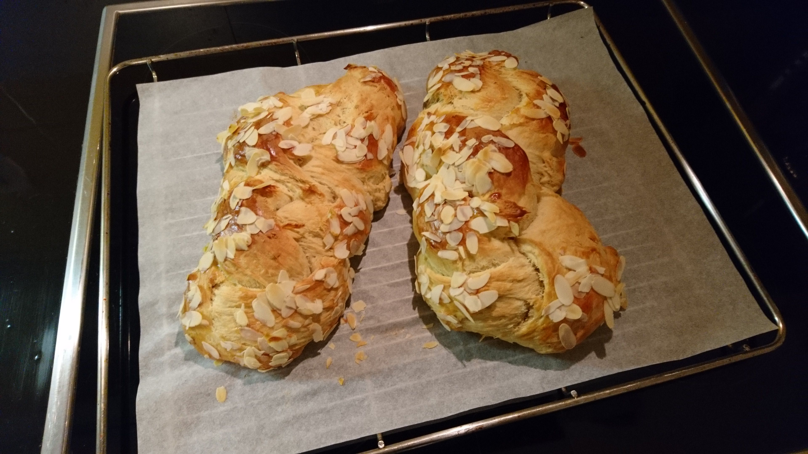

Τσουρέκι

Steps
- Put the water, flour, and yeast into the breadmaker.
- Beat the mahlab, sugar, mastic, cardamom, and a pinch of salt in a food processor, until all of the aromatics are finely ground.
- Add the aromatic mixture, orange zest, egg, vanilla, butter, and honey into the breadmaker.
- Leave in the breadmaker for about 20 minutes of kneading let the dough rise for about 2 hours.
- Preheat oven to 200° C.
- When the dough is ready, put it on a clean working surface.
- Roll the dough in to a baguette shape, fold in half and roll again.
- If the dough is more elastic than usual, add 2-3 tablespoons of flour until it thickens.
- Repeat this process 5-8 times, then cut in to 4 equal sized pieces.
- Shape each piece in to a long strip and place them one next to the other on your working surface, leaving a little space between them.
- Shape the 4 strips into two beautiful braids.
- Transfer to a baking pan lined with parchment paper.
- Brush with some egg whites, sprinkle with almond slivers and set it aside for 20 minutes, so it can rest and rise again.
- When ready, bake for 20-30 minutes, until golden.
Ingredients
- 150 g water
- 500 g flour
- 15 g dry yeast
- 10-15 g mahlab
- 50 g sugar
- 1 ½ g mastic
- 5 cardamom seeds
- pinch of salt
- grated zest of 1 orange
- 2 eggs
- 1 tablespoon vanilla extract
- 150 g honey
- 150 g butter, cut in to pieces
- egg whites for brushing over tops of loaves
- almond slivers, for sprinkling